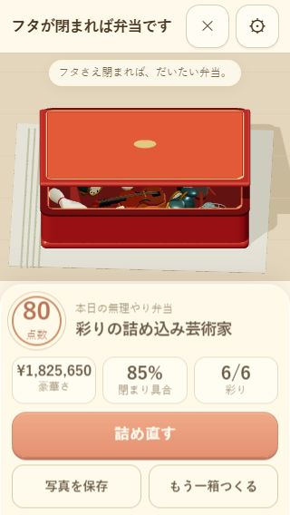

フタが閉まれば弁当ですClose That Bento
詰めて。押して。はみ出すと消える。
Pack it. Press it. Outside items disappear.

食材を選び、弁当箱の上で指を離すと置けます。フタは下のレーンを下へなぞって押し込みます。
Choose food and release over the box. Drag down on the lane to press the lid.
ゲーム画面だけ開く →Open game only →遊び方How to play
- おかずや？を選び、箸で箱に置きます。？は置くまで正体も大きさも分かりません。
- Choose food or a mystery box. Its contents and size are hidden until you release it over the bento.
- ？からはサボテンや金の延べ棒、100万円の札束など20種類。品物に応じたゲーム内価格がついています。
- Reveal one of 20 surprises, from a cactus to a gold bar or a million-yen cash bundle. Game values match the kind of item.
- 箱の外に出したものは削除されます。フタを押して完成させ、採点と称号を見てみましょう。
- Items released or pushed outside disappear. Press the lid to finish, then see your score and title.